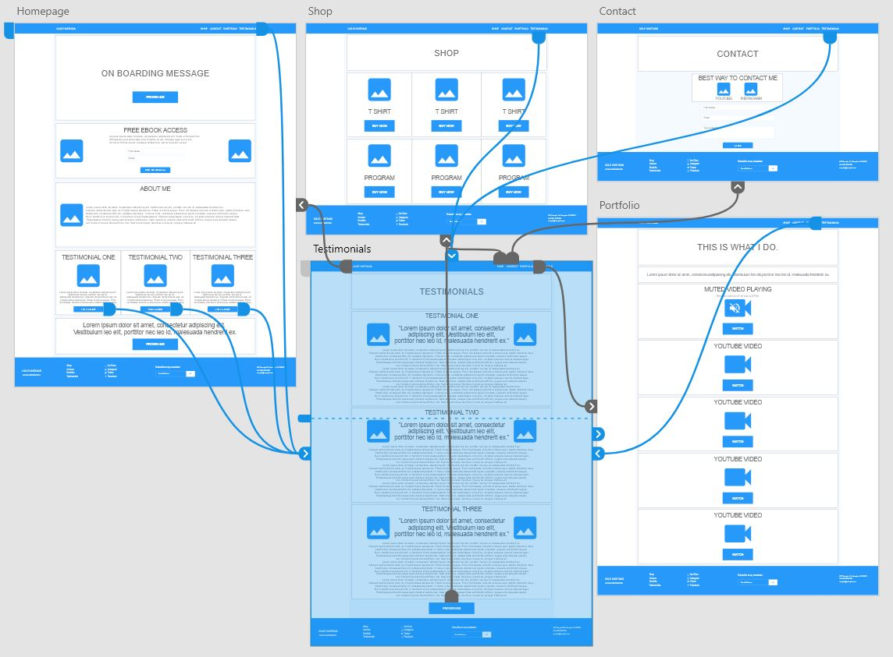
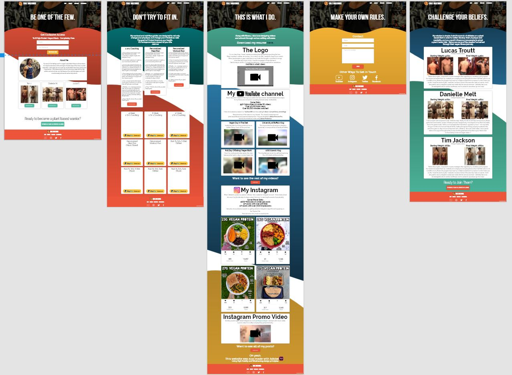

This website (before it was coded) was designed in Adobe XD, a popular UI/UX design software. I first designed the wireframe to get a basic idea of how I wanted the website to look like, and was able to prototype it as well thanks to Adobe XD's amazing tools.

The wireframe design
Once I finished the wireframe, it was time to move on to the high fidelity. Using common modern website principles, such as an on boarding banner, sans-type fonts, and a sleek, minimalistic layout, I created something I'm extremely proud of.
The high fidelity design
For my brand logo, I knew I needed something that represented everything that I am. Weird, imperfect, creative, and unique. So in order to do that, I needed to draw it from scratch. When people wear my gear, I want them to rep it with the thought in mind that it conveys more than just a block of tofu. It sends a message to those that see it. That veganism is about compassion towards all creatures. That those who are not vegan do not deserve to be treated poorly. That even small changes towards following a plant based diet should be recognized.
Since I was a kid, I dreamt of having a successful YouTube channel. And what started as a maybe for my future, soon turned into something that was easily manifestable.
I have done extensive research on YouTube SEO and have over 50 videos in competitively ranked tags.
Below are some of the videos on my channel. The channel is based around plant based fitness, personal development, and vlogs. They are all edited in Adobe Premiere Pro, and the thumbnails in Adobe Photoshop.
I made this video for a blog post about me on Buffalo Rising. Check out the post here.
This vlog involved me showing my viewers a typical day on campus at the University at Buffalo.
One of my most popular video series, this video features what I eat in a day on a plant based diet.
This vlog features me and my girlfriend exploring the 1000 islands at Alexandria Bay.
When I started to pursue my passion in fitness, I also created an Instagram account. It has slowly turned into one of my favorite ways to share content. And now, I'm reaching thousands of people daily.
Below are some of my most successful posts. I have done extensive research on getting ranked in Instagram's algorithm and appearing on the "Explore" Tab.
Another popular vegan-based Instagram account, @whiteglovedvegan, reached out to me to create a promo video for a coffee company they got sponsored by.